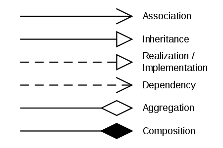
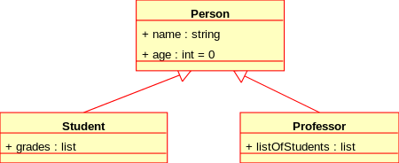
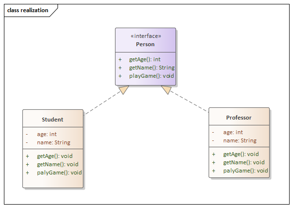

Uml
UML
软件工程领域中的一种通用、开发性建模语言，旨在提供一种可视化系统设计的标准方法
- 建模（Modeling）
- 类图
建模
区分 UML 模型和系统图集是很重要的。 图表是系统模型的部分图形表示。 图表集不需要完全覆盖模型，删除图表不会改变模型。 模型还可能包含驱动模型元素和图表的文档（例如书面用例）
UML 图表示系统模型的两种不同视图
- 静态（或结构）视图：强调使用对象、属性、操作和关系的系统的静态结构。它包括类图和复合结构图。
- 动态（或行为）视图：通过显示对象之间的协作和对象内部状态的变化来强调系统的动态行为。该视图包括序列图、活动图和状态机图
静态(结构) 动态(行为) 类图 通讯图 组件图 交互概览图 复合结构图 序列图 部署图 状态图 对象图 时序图 封装图 用例图 剖面图
类图
类图是面向对象建模的主要构建块。它用于应用程序结构的一般概念建模，以及详细建模，将模型转换为编程代码。类图也可用于数据建模。类图中的类代表主要元素、应用程序中的交互以及要编程的类
在图中，类用包含三个隔间的框表示
- 顶部隔间包含类的名称。它以粗体居中打印，第一个字母大写。
- 中间隔间包含类的属性。它们是左对齐的，第一个字母是小写。
- 底部隔间包含类可以执行的操作。它们也是左对齐的，第一个字母是小写。
表示类中变量修饰符的符号
- + 表示 public
- ~或者不带符号 default
- # 表示 protected
- - 表示 private
- _ 下划线表示static
- 斜体 表示抽象
类与类之间关系
在UML类图中，常见的有以下几种关系: 泛化（Generalization）, 实现（Realization），关联（Association)，聚合（Aggregation），组合(Composition)，依赖(Dependency) 
- 继承（Generalization/Inheritance）
它表明两个相关类（子类）中的一个被认为是另一个（超类）的特殊形式，超类被认为是子类的泛化.
图标表示实线空心箭头
（子类）_______▻（超类）

- 实现（Realization/Implementation） 实现关系是两个模型元素之间的关系，其中一个模型元素（客户）实现（实现或执行）另一个模型元素（供应商）指定的行为 图标表示虚线空心箭头
（实现者）--------▻（接口）

- 原文作者：cherubr
- 原文链接：https://cherubr.github.io/post/tools/uml/
- 版权声明：本作品采用知识共享署名-非商业性使用-禁止演绎 4.0 国际许可协议进行许可，非商业转载请注明出处（作者，原文链接），商业转载请联系作者获得授权。